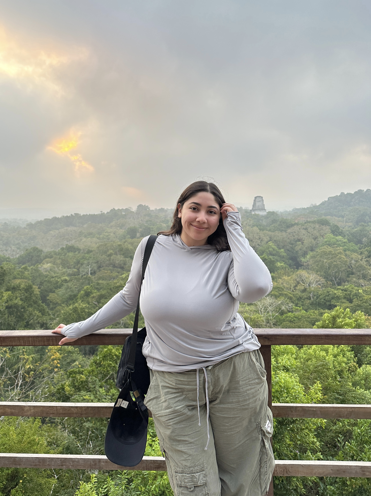
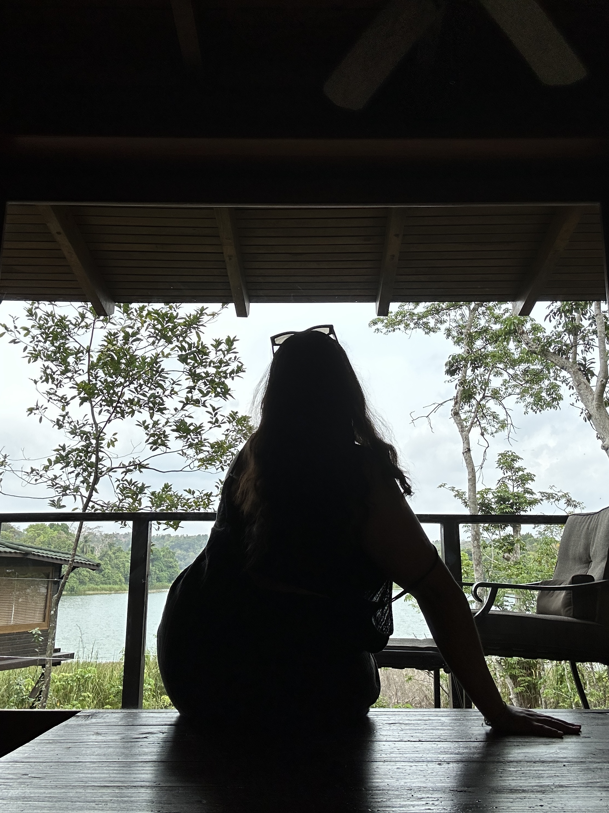
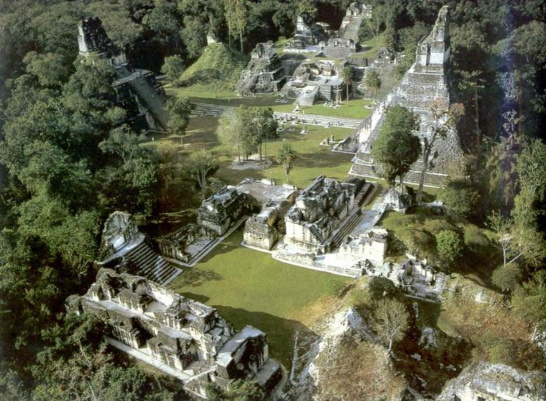
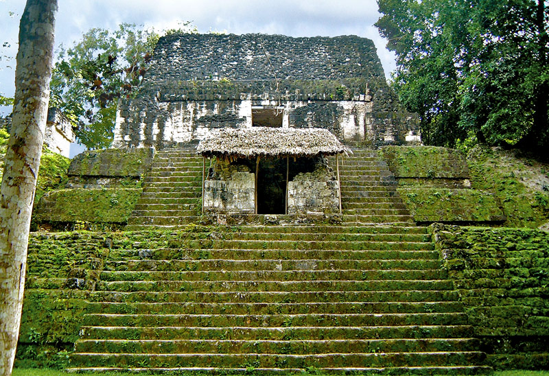
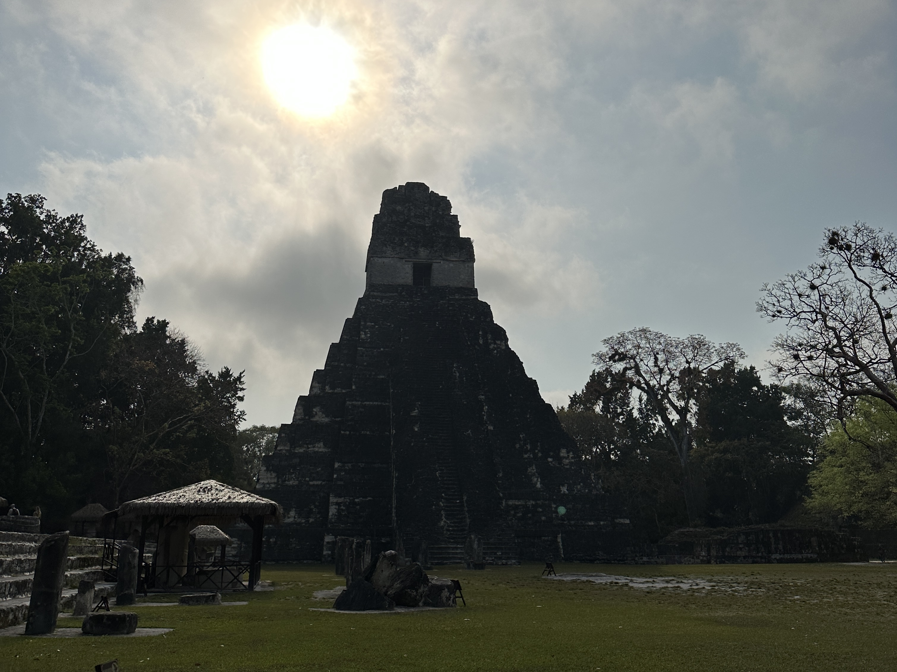
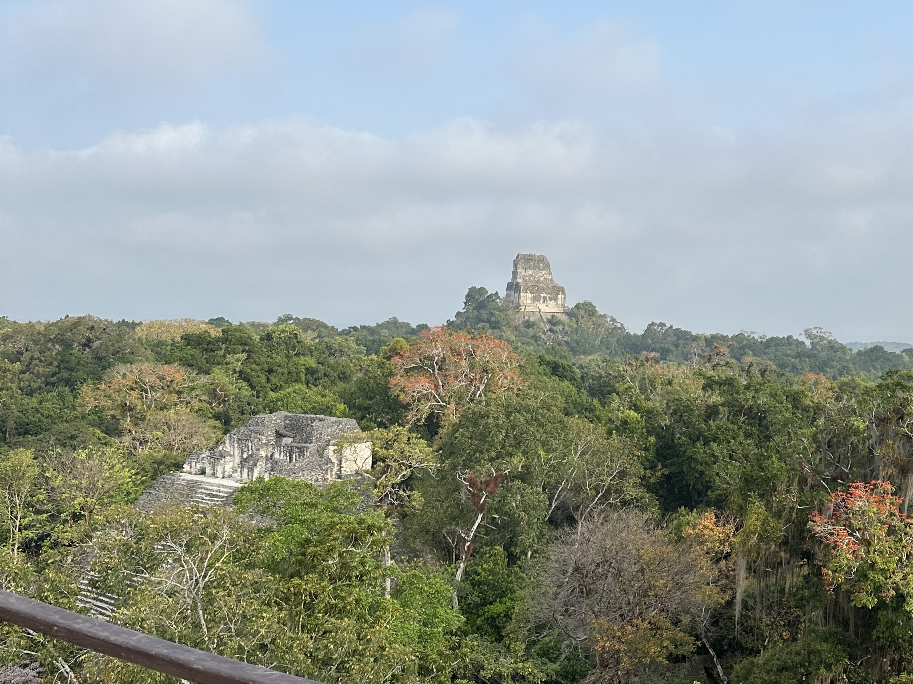
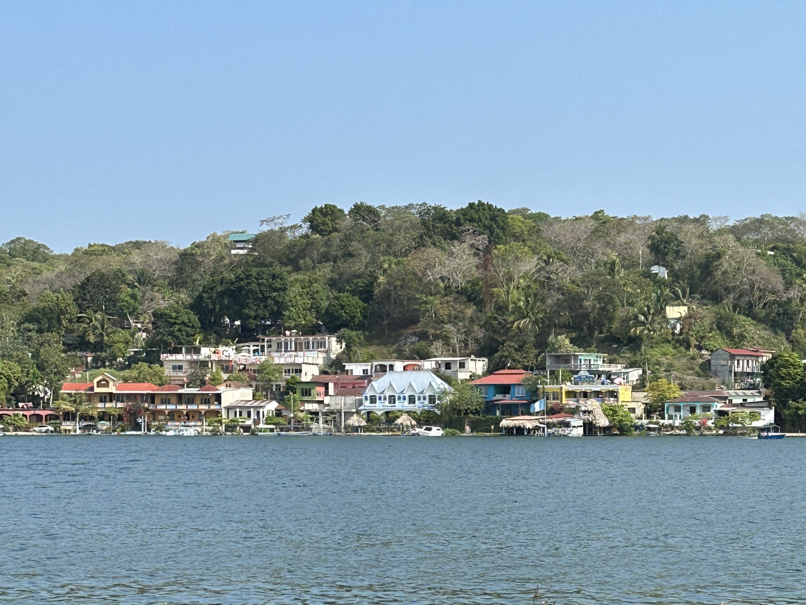
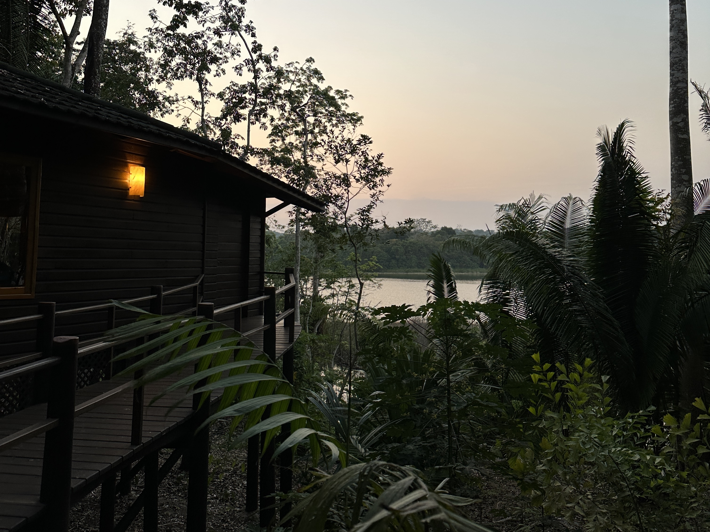
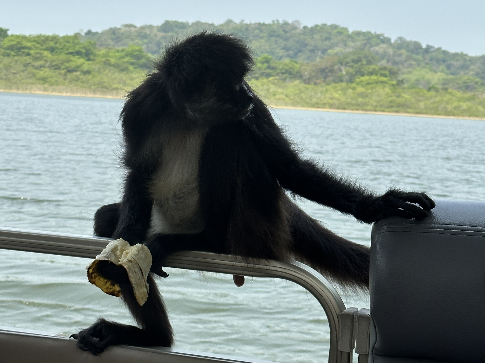

About Me

Travel started as a way for me to step outside of my routine, but it quickly became something much more intentional. What began as short trips and weekend escapes turned into a deeper curiosity about the world — the way people live, the stories behind places, and the small details that often go unnoticed. I’ve always been drawn to visual storytelling, which is why I document my experiences through both photography and video, often inspired by travel creators on Expedia’s YouTube channel. I use tools like Adobe Lightroom to shape the way these moments are shared. Each destination I visit becomes part of a larger narrative, one that reflects not just where I’ve been, but how those places have influenced the way I see and move through the world.

This site is a collection of those experiences — a space where travel is both documented and reflected on. Beyond the visuals, I focus on creating content that feels honest and immersive, whether that’s through vlogs, curated destination pages, or thoughtful travel insights. I often draw inspiration from travel guides and destination breakdowns on Lonely Planet, which help shape how I research and present places. My goal is not just to share where I go, but to create a sense of connection to each place — to highlight moments that feel real, unfiltered, and meaningful.
Destinations


Travel Tips
How to use this table
This table outlines the primary tools I use when planning trips. You can sort by category, cost, or purpose to quickly find the resource that fits your travel needs. These tools help streamline flight searches, accommodations, budgeting, and itinerary organization.
| Tool Name | Category | Best For | Cost |
|---|---|---|---|
| Google Flights | Flight Search | Comparing airfare prices | Free |
| Skyscanner | Flight Search | Flexible date searches | Free |
| Airbnb | Accommodation | Unique stays & apartments | Varies |
| Booking.com | Accommodation | Hotels & last-minute bookings | Varies |
Vlogs
My trip to Tikal National Park was one of the most unforgettable travel experiences I’ve had. Located deep in the Guatemalan jungle, the site felt like stepping into another world where ancient history and nature exist together. Walking through the ruins, I was surrounded by massive stone temples rising above the treetops, with howler monkeys echoing through the forest in the background.
What stood out most was the scale of everything — the architecture, the silence between sounds, and the feeling of being completely immersed in nature. Climbing one of the temples gave me a full panoramic view of the jungle canopy, stretching endlessly in every direction. It was both peaceful and powerful at the same time.
My time in Antigua felt completely different from Tikal, but just as memorable. The city is full of color, history, and colonial architecture framed by surrounding volcanoes.
One of my favorite parts of exploring Antigua was simply walking without a plan. I would move between markets, cafés, and plazas where daily life and history blend together.
Travel Gallery





